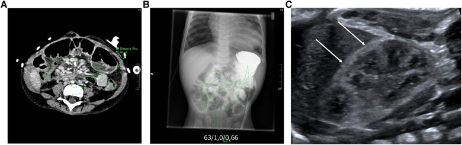
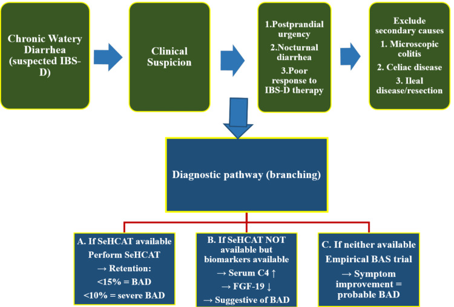
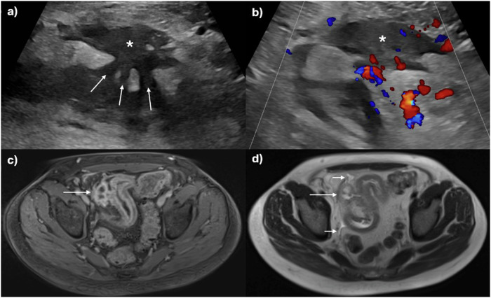
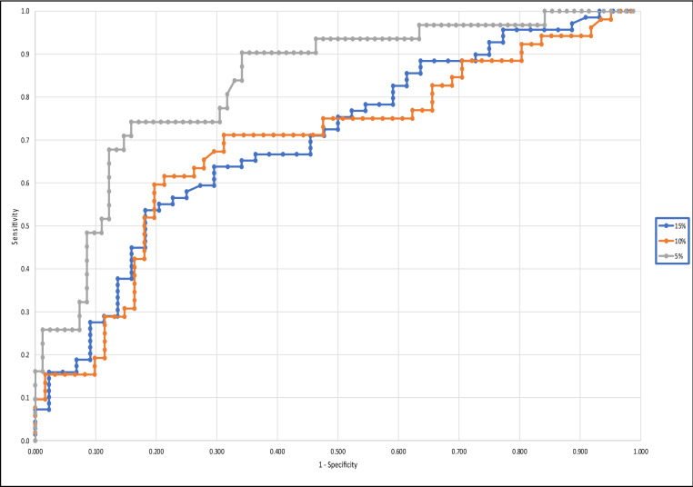

1982 — Tiêu chảy muối mật sau cắt hồi tràng: khi nào nghĩ tới và khi nào chụp / Bile acid diarrhea after ileal resection
Tags: pattern:tieu-chay pattern:kem-hap-thu vung:ruot-non vung:bung protocol:SeHCAT protocol:MR-enterography protocol:CT-bung score:SeHCAT
Mức chắc chắn (certainty): tổng hợp y văn (literature synthesis) — ngưỡng và cơ chế từ tổng quan BAD 2026 (PMC13264416), hướng dẫn tiêu chảy mạn 2023 của Hội Tiêu hóa Nhật (PMC11633876), nghiên cứu SeHCAT – fecal bile acid (PMC9117305); số liệu cắt hồi tràng từ 91 bệnh nhân Crohn có phẫu thuật (PMID 30116880) và đoàn hệ 5.264 người Đan Mạch (PMC10712339); hình ảnh đo ruột và biến chứng oxalate từ nghiên cứu 55 trẻ hội chứng ruột ngắn (PMC10369460). Không có thử nghiệm ngẫu nhiên riêng cho BAD sau cắt hồi tràng; chỗ suy luận được ghi rõ.
Câu chốt: Tiêu chảy sau cắt hồi tràng không đồng nghĩa với bệnh Crohn tái phát, SIBO hay "hội chứng ruột kích thích". Nếu bệnh nhân tiêu chảy nước, đi nhiều lần, không sốt, không máu, và hết sau bữa ăn béo thì phải nghĩ mất muối mật (bile acid diarrhea, BAD). Hình ảnh không chẩn đoán BAD — nhưng phải chụp để đo chiều dài ruột còn lại, loại trừ hẹp/tái phát/rò trước khi quy mọi triệu chứng cho "hội chứng ruột kích thích".
1. Tổng quan bệnh học – cơ chế hình ảnh
1.1 Vòng tuần hoàn ruột – gan và chỗ đứt gãy
- Muối mật (bile acids) được gan tổng hợp từ cholesterol, bài tiết vào ruột non để nhũ tương hóa mỡ. Bình thường 95% được tái hấp thu chủ động ở hồi tràng tận qua chất vận chuyển ASBT (apical sodium-dependent bile acid transporter, SLC10A2), quay về gan qua tĩnh mạch cửa — vòng tuần hoàn ruột – gan (enterohepatic circulation).
- Cắt hồi tràng làm mất bề mặt tái hấp thu → muối mật tràn xuống đại tràng. Tại đại tràng, muối mật tăng tính thấm niêm mạc, kích thích bài tiết Cl⁻/nước qua cAMP và tăng nhu động → tiêu chảy nước, đi nhiều lần, có khi són phân.
- Cơ chế thứ hai (BAD nguyên phát): rối loạn trục FXR – FGF19 làm gan tăng tổng hợp muối mật dù hồi tràng còn nguyên; đây là cơ chế của BAD "vô căn" / IBS-D (PMC13264416).
- Vì sao cắt hồi tràng càng dài càng nặng: mất chiều dài tái hấp thu và mất van hồi – manh tràng (làm transit nhanh, tăng vi khuẩn đại tràng trào ngược). Nghiên cứu 91 bệnh nhân Crohn cho thấy 97% (88/91) có SeHCAT bất thường sau cắt hồi tràng, dù trung vị chỉ cắt 24 cm (khoảng 15–165 cm) — nghĩa là cắt ít vẫn đủ gây BAD (PMID 30116880).
- Sinh lý bệnh của biến chứng muộn: mất muối mật kéo dài → kém hấp thu mỡ → thiếu vitamin tan trong mỡ (A, D, E, K); mất bề mặt hồi tràng → thiếu B12; mỡ không hấp thu gắn calci, để oxalate tự do hấp thu nhiều → tăng oxalate niệu → sỏi thận/calci hóa thận (bài 3058).
1.2 TẠI SAO hình ảnh không chẩn đoán được BAD
- BAD là bệnh chức năng, không phải bệnh cấu trúc: không có khối, không có viêm khu trú, không có dày thành đặc hiệu. CT/MRI ở bệnh nhân BAD điển hình thường bình thường — vì vậy "CT bình thường" không loại trừ BAD.
- Muối mật không tạo đậm độ tia X và không đủ lớn để thấy trên siêu âm; hình ảnh chỉ thấy hệ quả: quai ruột giãn nhẹ, dịch trong lòng ruột, sỏi thận/calci hóa tủy thận do oxalate, hoặc hẹp/tái phát Crohn.
- SeHCAT (⁷⁵Se-homotaurocholic acid) là xét nghiệm chức năng bằng đồng vị phóng xạ: uống capsule acid mật gắn ⁷⁵Se, chụp gamma camera ngay sau uống và ngày thứ 7, tính tỷ lệ lưu giữ. Vì acid mật chỉ được tái hấp thu ở hồi tràng tận, độ lưu giữ phản ánh chức năng hồi tràng — đây là lý do SeHCAT được xem là "chuẩn vàng" của BAD.
- Ngưỡng SeHCAT: < 15% = BAD; < 10% = BAD mức trung bình – nặng; < 5% = nặng (PMC13264416). Một số phác đồ dùng < 10% làm ngưỡng chẩn đoán chính; 10–15% là vùng nhẹ/ranh giới.
- TẠI SAO vẫn cần CT/MRI: để trả lời ba câu hỏi cấu trúc trước khi chấp nhận BAD: (1) chiều dài ruột non còn lại bao nhiêu, (2) có hẹp miệng nối hay tái phát Crohn không, (3) có rò, áp-xe, tắc không. Bỏ bước này là bỏ sót nguyên nhân mổ được.
1.3 Ngưỡng định lượng và dịch tễ
| Chỉ số | Số liệu | Nguồn |
|---|---|---|
| Tỷ lệ BAD trong dân số | 1–2% | PMC10712339 |
| BAD trong IBS-D | 10% nặng, 32% trung bình (tổng quan 2009 dẫn trong hướng dẫn Nhật) | PMC11633876 |
| SeHCAT bất thường sau cắt hồi tràng ở Crohn | 97% (88/91); trung vị cắt 24 cm | PMID 30116880 |
| Ngưỡng SeHCAT | < 15% BAD; < 10% trung bình – nặng; < 5% nặng | PMC13264416 |
| Đáp ứng cholestyramine | Khoảng 70% bệnh nhân đáp ứng; < 5% đáp ứng tốt nhất | PMC13264416, PMC9117305 |
| Biến chứng muộn | Thiếu B12, thiếu vitamin A/D/E/K, tăng oxalate niệu, sỏi thận | PMC10369460 |
- Vì sao tỷ lệ BAD ở IBS-D cao đến vậy: triệu chứng trùng lặp hoàn toàn với IBS-D (tiêu chảy nước, đau bụng, không máu); nếu không đo SeHCAT/C4, bệnh nhân bị dán nhãn "IBS" và điều trị triệu chứng vô ích trong nhiều năm.
- Vì sao cholecystectomy liên quan: bỏ túi mật làm mất kho dự trữ muối mật, acid mật xuống ruột liên tục và nhiều hơn trong bữa ăn → một số bệnh nhân tiêu chảy nước sau cắt túi mật, đáp ứng với chất gắn acid mật (bile acid sequestrant).
2. Mẫu hình + chẩn đoán phân biệt theo vị trí/bối cảnh (gamut)
- Sau cắt hồi tràng tận (thường gặp nhất): BAD ± SIBO ± hẹp miệng nối ± tái phát Crohn. Đây là gamut "3 trong 1" — phải loại trừ cấu trúc trước.
- Sau cắt túi mật: BAD do mất kho dự trữ; thường xuất hiện vài tuần – vài tháng sau mổ, tiêu chảy nước, không sốt.
- Bệnh Crohn hồi tràng không mổ: viêm/loét làm giảm tái hấp thu; phân biệt với tái phát sau mổ bằng MR enterography/ileocolonoscopy.
- SIBO (bài 1960): cùng bối cảnh cắt ruột, nhưng đầy hơi, chướng, tiêu chảy sau carbohydrate, đáp ứng kháng sinh; có thể đồng thời với BAD.
- Bệnh celiac, viêm ruột do xạ, vagotomy, thuốc (metformin, ức chế GLP-1, colchicine): tiêu chảy mạn, nhưng không đáp ứng chất gắn acid mật; hỏi kỹ thuốc và bệnh nền.
- Hội chứng ruột ngắn (bài 1762, 3006): BAD là một phần của bệnh cảnh; ở đây vấn đề là dinh dưỡng, PN, nhiễm catheter, không chỉ tiêu chảy.
- Viêm đại tràng vi thể (microscopic colitis): tiêu chảy nước ở người lớn tuổi, nội soi đại tràng bình thường, chẩn đoán bằng sinh thiết; không đáp ứng chất gắn acid mật.
3. Bảng so sánh phân biệt (ma trận đối chiếu)
| Thực thể (entity) | Hình ảnh điển hình | Chốt vào (rule-in) | Chốt loại (rule-out) | Gợi ý xác nhận |
|---|---|---|---|---|
| BAD sau cắt hồi tràng | CT/MRE thường bình thường; có thể thấy đoạn hồi tràng đã cắt, miệng nối, quai giãn nhẹ, sỏi/calci hóa thận do oxalate | SeHCAT < 15% (nặng < 10%, rất nặng < 5%) + tiêu chảy nước đáp ứng cholestyramine | Không loại trừ bằng CT/MRI bình thường; không chẩn đoán bằng "đáp ứng thử" đơn thuần nếu chưa loại trừ cấu trúc | SeHCAT; nếu không có: C4 tăng, FGF-19 giảm, fecal bile acid |
| SIBO (bài 1960) | CT: quai giãn, mức dịch – khí, không điểm chuyển tiếp; không có dấu hiệu đặc hiệu | Test hơi thở H₂ ≥ 20 ppm/90 phút hoặc CH₄ ≥ 10 ppm; hút dịch hỗng tràng ≥ 10³ CFU/mL | Đáp ứng cholestyramine không loại trừ SIBO (có thể đồng thời) | Test hơi thở, thử kháng sinh có kiểm soát |
| Tái phát Crohn sau cắt | MRE: dày thành > 3 mm, tăng tín hiệu T2, ngấm thuốc, hẹp/rò, hạch, mô mỡ quanh ruột | Dày thành + ngấm thuốc + loét/hẹp tại miệng nối | Niêm mạc bình thường trên nội soi + MRE âm → ít khả năng tái phát | MR enterography + ileocolonoscopy + calprotectin |
| Hẹp miệng nối | CT/MRE: đoạn hẹp chuyển tiếp, quai trước hẹp giãn; X-quang baryt: "string sign" | Điểm chuyển tiếp + quai giãn trước hẹp | Không có điểm chuyển tiếp → không phải hẹp cơ học | CT/MRE, nội soi, nong bóng |
| Hội chứng ruột ngắn | CT: chiều dài ruột non còn lại ngắn, giãn thích nghi, mất van hồi – manh tràng | Ruột non còn lại < 25%** chiều dài dự kiến hoặc **phụ thuộc PN > 6 tuần | Chiều dài bình thường → không phải SBS | Đo chiều dài trên CT/MRE (ảnh dưới) |
| Viêm đại tràng vi thể | Nội soi/CT bình thường | Sinh thiết: tăng lympho bào hoặc dải collagen | Sinh thiết bình thường → loại trừ | Sinh thiết đại tràng |

(A) CT bụng: đo chiều dài ruột non còn lại bằng đường vẽ; (B) X-quang: đo chiều dài ruột; (C) siêu âm thận: viền vỏ tăng âm (mũi tên) = calci hóa tủy thận do tăng oxalate niệu ở trẻ hội chứng ruột ngắn. Đây là ví dụ hình ảnh chỉ đo hậu quả, không chẩn đoán BAD. Nguồn: Schaefer JT et al., Front Pediatr 2023 (PMC10369460), CC BY 4.0.4. Protocol chụp + hệ phân độ/điểm chuẩn hóa
4.1 SeHCAT — "protocol" chức năng
- Chỉ định: tiêu chảy nước mạn (> 4 tuần) không rõ nguyên nhân, đặc biệt sau cắt hồi tràng/cắt túi mật, nghi IBS-D không đáp ứng điều trị thường quy.
- Kỹ thuật: uống capsule ⁷⁵Se-homotaurocholic acid (liều chuẩn theo quy định địa phương, thường 370 kBq); chụp gamma camera toàn thân tại thời điểm 0 (hoặc 1 giờ) và ngày 7; tính % lưu giữ đã hiệu chỉnh phân rã.
- Ngưỡng: < 15% = BAD; < 10% = trung bình – nặng; < 5% = nặng (PMC13264416). 15–20% là vùng ranh giới — kết hợp lâm sàng.
- Hạn chế: không phổ biến ở nhiều nước; transit nhanh, bệnh celiac, SIBO có thể gây dương giả; thu thập/đo sai gây âm giả. Thai kỳ: tránh (đồng vị phóng xạ).
- Khi không có SeHCAT: C4 (7α-hydroxy-4-cholesten-3-one) tăng và FGF-19 giảm gợi ý BAD; fecal bile acid là lựa chọn thay thế (PMC9117305). Nếu không có xét nghiệm nào: thử cholestyramine 4 tuần và đánh giá đáp ứng — nhưng phải loại trừ cấu trúc trước.

Lưu đồ gốc: nghi BAD khi tiêu chảy nước mạn + mót sau ăn + tiêu chảy ban đêm + đáp ứng kém điều trị IBS-D; loại trừ viêm đại tràng vi thể, celiac, bệnh hồi tràng/cắt ruột; nếu có SeHCAT → < 15% BAD, < 10% nặng; nếu không → C4 tăng/FGF-19 giảm; nếu không có gì → thử chất gắn acid mật. Nguồn: Maqsood A et al., Cureus 2026 (PMC13264416), CC BY 4.0.4.2 MR enterography / CT enterography — "protocol" cấu trúc
- Chỉ định: mọi bệnh nhân tiêu chảy mạn sau cắt hồi tràng có đau bụng, sụt cân, sốt, máu trong phân, hoặc không đáp ứng điều trị — để tìm hẹp, rò, tái phát Crohn, áp-xe.
- Chuẩn bị MRE: nhịn ăn 4–6 giờ; uống dung dịch cản quang ruột (mannitol/PEG 1–1,5 L trong 45–60 phút) để giãn ruột; glucagon IV giảm nhu động; 1.5T hoặc 3T.
- Chuỗi xung tối thiểu: T2 HASTE/SSFSE (phù, dịch), T2 fat-sat, DWI (ổ viêm/áp-xe), T1 sau tiêm cản quang (ngấm thuốc, rò). Đo chiều dài ruột non còn lại trên coronal T2; đo độ dày thành tại miệng nối (bình thường ≤ 3 mm).
- CT enterography khi không có MRI: lát mỏng ≤ 1 mm, cản quang IV, uống nước/iodine dilute; ưu điểm nhanh, nhược điểm bức xạ (trẻ, chụp lặp).
- Không dùng CT bụng thường quy để "tìm BAD" — chỉ dùng khi có cờ đỏ hoặc cần đo chiều dài ruột trước phẫu thuật.
4.3 Điều trị và theo dõi (phần hình ảnh cần biết)
- Cholestyramine 4 g × 1–4 lần/ngày (trước bữa ăn), tăng dần; colestipol 5 g hoặc colesevelam 625 mg (dung nạp tốt hơn) là lựa chọn thay thế.
- Đánh giá đáp ứng sau 4 tuần: giảm số lần đi cầu, phân thành khuôn; nếu không đáp ứng → kiểm tra tuân thủ, liều, chẩn đoán khác (SIBO, Crohn, celiac).
- Tương tác thuốc: cholestyramine gắn levothyroxine, warfarin, digoxin, statin, thuốc tránh thai → uống cách 4 giờ.
- Theo dõi: B12 (sau cắt hồi tràng), vitamin A/D/E/K, calci – oxalate niệu 24 giờ, siêu âm thận tầm soát sỏi/calci hóa; DEXA nếu kém hấp thu kéo dài.
- Không tự ngừng chất gắn acid mật khi đã đáp ứng: BAD sau cắt hồi tràng thường kéo dài; ngừng thuốc sẽ tái phát.
flowchart TD
A[Tiêu chảy nước mạn sau cắt hồi tràng] --> B{Cờ đỏ: sốt, máu, sụt cân, đau khu trú?}
B -->|Có| C[MR enterography hoặc CT enterography: hẹp, rò, tái phát, áp-xe]
B -->|Không| D[Đánh giá BAD: số lần đi cầu, liên quan bữa ăn béo, đáp ứng thuốc]
D --> E{SeHCAT có sẵn?}
E -->|Có| F[SeHCAT: <15% BAD; <10% nặng; <5% rất nặng]
E -->|Không| G[C4 tăng ± FGF-19 giảm ± fecal bile acid]
F --> H{Loại trừ được hẹp/tái phát?}
G --> H
H -->|Chưa| C
H -->|Rồi| I[Thử cholestyramine 4 g × 1–4/ngày trong 4 tuần]
I --> J{Đáp ứng?}
J -->|Có| K[Duy trì + theo dõi B12, vitamin tan trong mỡ, oxalate, thận]
J -->|Không| L[Xem lại: tuân thủ, liều, SIBO, celiac, Crohn, thuốc]
5. Biến thể bình thường và cạm bẫy
- "CT bình thường" không loại trừ BAD: đây là cạm bẫy hay gặp nhất — bệnh chức năng, không có tổn thương cấu trúc. Đừng dừng lại ở "không thấy gì".
- Tiêu chảy sau cắt hồi tràng không phải lúc nào cũng do BAD: có thể SIBO, transit nhanh, tái phát Crohn, nhiễm trùng, thuốc; và BAD + SIBO có thể cùng tồn tại.
- SeHCAT dương giả: transit nhanh, bệnh celiac, SIBO làm mất acid mật khỏi ruột mà không do hồi tràng; dương giả dẫn tới dùng cholestyramine vô ích và bỏ sót bệnh nền.
- SeHCAT âm giả: thu thập/đo sai, không nhịn ăn, nôn capsule; nếu lâm sàng mạnh, lặp lại hoặc dùng C4/fecal bile acid.
- Cholestyramine không phải "thuốc không tác dụng phụ": gây táo bón, đầy hơi, tăng transaminase hiếm; gắn thuốc khác (levothyroxine, warfarin) — luôn hỏi danh sách thuốc.
- Bỏ sót biến chứng muộn: B12 (thiếu máu, thần kinh), vitamin D (loãng xương), oxalate (sỏi/calci hóa thận) — hình ảnh calci hóa tủy thận trên siêu âm là dấu hiệu muộn, không nên chờ tới lúc đó.
- Satisfaction of search: thấy miệng nối hẹp nhẹ rồi quy hết tiêu chảy cho hẹp, trong khi bệnh nhân có BAD; ngược lại, thấy "hồi tràng đã cắt" rồi quy hết cho BAD, bỏ sót tái phát Crohn.
- Không lạm dụng CT lặp lại: tiêu chảy mạn không cờ đỏ không cần CT nhiều lần; ưu tiên xét nghiệm chức năng + MRE một lần khi có chỉ định.
6. Tự lượng giá — Blind Quiz
Ca 1 — Bé trai 3 tuổi, hội chứng ruột ngắn sau cắt hồi tràng vì xoắn ruột, tiêu chảy nước và sụt cân. CT bụng và siêu âm thận dưới đây:
- Câu hỏi: (A) đang đo gì? (C) mũi tên chỉ gì? Hai phát hiện này liên quan thế nào đến cắt hồi tràng?
Bấm để hiện đáp án
- (A) Đo chiều dài ruột non còn lại trên CT (đường vẽ theo quai ruột); (B) đo trên X-quang; đây là cách định lượng chiều dài ruột để tiên lượng và theo dõi.
- (C) Siêu âm thận: viền vỏ tăng âm (mũi tên) = calci hóa tủy thận do tăng oxalate niệu — biến chứng của kém hấp thu mỡ sau cắt ruột (free fatty acid gắn calci → oxalate tự do hấp thu).
- Liên quan: cắt hồi tràng → mất tái hấp thu muối mật + kém hấp thu mỡ → BAD, thiếu vitamin tan trong mỡ, tăng oxalate niệu. Hình ảnh không chẩn đoán BAD, nhưng đo được chiều dài ruột và biến chứng.
- Nguồn: Schaefer JT et al., Front Pediatr 2023 (PMC10369460), CC BY 4.0.
Ca 2 — Nam 32 tuổi, Crohn, đã cắt hồi – manh tràng 2 năm; đau hố chậu phải, tiêu chảy, CRP tăng. Siêu âm (a, b) và MRI (c, d):

- Câu hỏi: Hình (a–b) và (c–d) cho thấy gì tại miệng nối? Đây là BAD đơn thuần hay có tái phát Crohn? Cần làm gì tiếp?
Bấm để hiện đáp án
- (a–b) Siêu âm: dày thành ruột, mất phân tầng, tăng tín hiệu Doppler; (c–d) MRI: dày thành + ngấm thuốc, có đường rò/hẹp tại miệng nối.
- Đây là tái phát Crohn có biến chứng (rò/hẹp), không phải BAD đơn thuần — dù BAD có thể đồng thời sau cắt hồi tràng.
- Bước tiếp: ileocolonoscopy + sinh thiết, calprotectin, điều trị Crohn (sinh học/kháng viêm); không chỉ cho cholestyramine rồi theo dõi.
- Nguồn: Hameed M et al., Eur Radiol 2025 (PMC12634764), CC BY 4.0.
Ca 3 — Nữ 41 tuổi, tiêu chảy nước 8 tháng sau cắt hồi tràng 40 cm; SeHCAT không có. Bác sĩ dùng fecal bile acid và vẽ đường cong ROC dưới đây:

- Câu hỏi: Trục tung/trục hoành là gì? Điểm nào trên đường cong tương ứng SeHCAT ≤ 5%? Vì sao không dùng một ngưỡng duy nhất cho mọi mức BAD?
Bấm để hiện đáp án
- Trục tung = độ nhạy (sensitivity); trục hoành = 1 − độ đặc hiệu (1 − specificity); đường cong càng lệch lên trái trên thì xét nghiệm càng tốt.
- Đường SeHCAT ≤ 5% (BAD nặng) có AUC cao nhất; khi hạ ngưỡng xuống ≤ 10% hoặc ≤ 15%, độ đặc hiệu giảm — tức càng mở rộng định nghĩa BAD, xét nghiệm càng kém đặc hiệu.
- Vì vậy không có một ngưỡng duy nhất: ngưỡng phụ thuộc mục đích (sàng lọc vs xác nhận) và tỷ lệ mắc trước xét nghiệm; kết hợp lâm sàng + đáp ứng thuốc.
- Nguồn: Kumar A et al., Sci Rep 2022 (PMC9117305), CC BY 4.0.
Bài liên quan chéo
- 1960 – SIBO sau cắt ruột ngắn
- 1762 – Hội chứng ruột ngắn ở người lớn
- 3006 – Hội chứng ruột ngắn & bệnh gan do nuôi dưỡng tĩnh mạch ở trẻ
- 3053 – Phẫu thuật kéo dài ruột STEP/LILT
- 162 – Tắc ruột non: điểm chuyển tiếp và chiến lược chẩn đoán
- 1981 – Hẹp miệng nối tụy – ruột sau Whipple
- 1984 – Hẹp ruột non do NSAID và CMUSE
Ảnh
- Nguồn + giấy phép từng ảnh:
images/CREDITS.md. Tất cả ảnh CC BY 4.0, dùng nguyên bản, không crop/ghép. - Hình đo chiều dài ruột và calci hóa thận (PMC10369460) là ca trẻ hội chứng ruột ngắn; hình MRE (PMC12634764) là ca tái phát Crohn sau cắt hồi – manh tràng; hình ROC (PMC9117305) là biểu đồ so sánh xét nghiệm.
Không dùng để chẩn đoán độc lập khi chưa có người hướng dẫn.